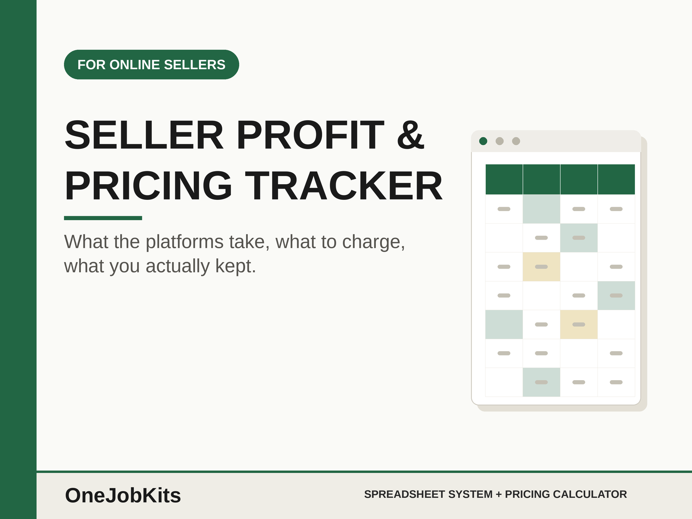

OneJobKits · Kit #31
Online Seller Profit & Pricing Tracker — Etsy seller profit tracker spreadsheet

Do you actually know what Etsy kept from your last sale? Most sellers don't — not exactly. The payout lands, the fees are buried inside it, and the real profit on a product is a guess made of listing prices and optimism. A serious Etsy seller profit tracker spreadsheet has to do three jobs at once: price a product before you list it, with the fees worked out; record what each sale actually earned after fees and costs; and roll the year into one honest monthly picture. That is exactly the shape of this kit.
The pain it solves is fee blindness across platforms. Sell the same item on Etsy, Shopify, Gumroad and eBay and four different fee structures take four different bites — a percentage here, a fixed fee there, shipping charged to the buyer but paid by you. This workbook starts from one editable fee table that you set from your own platform statements, and every calculator, log row and dashboard figure reads that table. Change a rate once and the whole system prices and records at your real rates, not at a template maker's assumptions.
What this kit is: a records and pricing system you own — a spreadsheet workbook in Excel and Google Sheets versions, worked example files, and a short setup guide. What it is not: it is not accounting software, it does not connect to any platform or bank, it files nothing, and it gives no tax, accounting or financial advice. It organises the numbers you enter and does the fee arithmetic on them — the judgments stay yours, and your accountant receives cleaner records.
Free download — start with the Pricing Calculation Starter
The FREE Pricing Calculation Starter is a 2-page fillable PDF (11 fields) that prices one product by hand: the price you are thinking of charging, the platform fees worked out line by line, your total costs, and the profit that is actually left. It is the Pricing Calculator's Method A done on paper for a single product — the honest first pass most listings never get before they go live.
Download the free Pricing Calculation Starter (PDF)Get it on Gumroad instead
What the starter does not do: it prices one product, once, by hand. The full system below prices both ways (including solving the price from the profit you want), logs every sale with its fees, net and profit calculated, tracks expenses in your own categories, and builds the monthly dashboard by itself — so the answer to “what did I actually make?” is a page you open, not a calculation you redo.
What's inside the full system
- Profit & pricing workbook (spreadsheet, 6 tabs; Excel + Google Sheets, no macros) — START HERE · Settings & Fees — the editable fee table: one row each for Etsy, Shopify, Gumroad, eBay, Amazon and Other, with a percentage fee and a fixed fee per sale; every formula in the workbook reads this table, so the rates are yours, set from your own statements · Pricing Calculator — two methods side by side: Method A, set a price and see the fees, profit and margin; Method B, set the profit you want and the sheet solves the price you need to charge · Sales Log — 120 rows: type the platform name and the fees, net and profit calculate for that row, including shipping charged and shipping paid · Expense Log — 120 rows in your own categories, so costs stop living in email receipts · Monthly Dashboard — gross, fees, item costs, net, expenses and profit by month, plus a by-platform block, all formula-built from the two logs
- Worked example files — the workbook filled in for a fictional seller (shown below), in both Excel and Google Sheets versions, so every tab's intended use is visible before you type a real number
- Setup Guide (PDF, 4 pages) — what is inside, setup for Excel and Sheets, how to make the fee table yours, pricing both ways, the weekly rhythm of logging, a tour of the worked example, and troubleshooting
- Pro ($39) adds the Seller Growth Pack (workbook pair, Excel + Google Sheets): a Multi-Platform Summary, a Quarterly Records Summary, and a Price Test Log — for sellers comparing channels quarter by quarter and testing prices deliberately instead of by feel
A filled example — so you can see the finished thing
The kit's worked example follows a fictional seller, Priya Nair, who sells print & paper goods. Priya is invented; what the file demonstrates is the system working end to end — 10 sales across Etsy, Shopify, Gumroad and eBay and 6 expenses, spread over four months, all reading the same fee table:
| From Priya's dashboard (fictional sample) | What the example file shows |
|---|---|
| Gross sales | 10 sales logged across four platforms — Etsy, Shopify, Gumroad and eBay — totalling $280.18 gross |
| Platform fees | $29.60 — calculated row by row from the platform typed on each sale, using the Settings & Fees table, not typed in as a lump |
| Item costs | $40.50 across the 10 sales, so profit is measured after what the goods themselves cost |
| Net | $250.58 — gross minus the platform fees, the payout-side truth of the four months |
| Expenses | 6 expense rows in her own categories totalling $121.84 |
| Profit | $88.24 for the four months — net minus item costs minus expenses, built by formula on the Monthly Dashboard |
That last line is the point of the whole kit. Four months, four platforms, sixteen rows of entries — and the profit is a number the dashboard states, not a feeling the payout emails suggest.
Who it is for
Online sellers on Etsy, Shopify, Gumroad, eBay or Amazon — especially sellers on more than one platform at once — who price by gut, discover fees at payout time, and want one honest record of what each sale and each month actually earned. It suits a small shop that has outgrown the notes app but does not need, or want, bookkeeping software and a subscription.
Who it is not for
Anyone who wants their taxes filed, their accounts kept for them, or advice on deductions: this kit does none of that, deliberately. It also connects to nothing — no platform imports, no bank feeds; you type the sales and expenses, and the sheet does the arithmetic. If you sell on a single platform at very low volume, the free starter above honestly covers the pricing half of the job.
Questions buyers ask
- Do the fee rates match what my platforms actually charge?
- The workbook ships with an editable Settings & Fees table holding a percentage fee and a fixed fee per sale for Etsy, Shopify, Gumroad, eBay, Amazon and Other. Those rates are starting estimates — you set them from your own platform statements, and because every formula in the Pricing Calculator, the Sales Log and the Dashboard reads that one table, the whole workbook prices and records at your rates from then on. Update the table when a platform changes its fees and everything downstream follows.
- How does the Pricing Calculator work — both ways?
- Method A: enter the price you are thinking of charging, plus your costs, and the sheet shows the platform fees, the profit and the margin at that price. Method B works backwards: enter the profit you want to make and your costs, and the sheet solves the price you would need to charge to keep that profit after fees. Pricing stops being a guess in both directions — you can check a price, or derive one.
- How does the Sales Log calculate each sale?
- One row per sale, 120 rows. You enter the date, the item, the price, your item cost, and shipping charged and shipping paid — and you type the platform name. The row looks that platform up in your Settings & Fees table and calculates the fees, the net and the profit for that sale. The Monthly Dashboard then totals the log by month and by platform, so multi-platform selling stays one record instead of four payout histories.
- What does the Monthly Dashboard actually show?
- Gross, fees, item costs, net, expenses and profit, month by month, plus a by-platform block — all formula-built from the Sales Log and Expense Log. Nothing on the dashboard is typed by hand: log the sales and the expenses, and the month assembles itself. It is the page that answers “what did I actually make last month?” in one look.
- Excel or Google Sheets — and are there macros?
- Both. The workbook ships in an Excel version and a Google Sheets version with the same tabs and the same formulas, and Pro's Seller Growth Pack ships as the same pair. There are no macros anywhere in the kit — every calculation is an ordinary spreadsheet formula you can inspect, which is also why the files open cleanly in either program.
- What does Pro add?
- The Seller Growth Pack, as a workbook pair (Excel + Google Sheets): a Multi-Platform Summary for comparing your channels side by side, a Quarterly Records Summary that rolls your own logged entries up by quarter, and a Price Test Log for recording deliberate price changes and what they did to per-unit profit. The Quarterly Records Summary is a summary of your own entries — it is not a tax return or a set of accounts.
- What does the free starter cover, and what does the full system add?
- The free Pricing Calculation Starter is a 2-page fillable PDF (11 fields): one product priced by hand — price, fees worked out, total costs, profit left. The full system is the ongoing version of that page: the editable fee table, pricing in both directions, every sale logged with fees, net and profit calculated (120 rows), expenses in your own categories (120 rows), and the monthly dashboard building itself from both logs.
Prices
Base: $29 · Pro (adds the Seller Growth Pack — multi-platform summary, quarterly records summary and price test log): $39 — one-time payment, digital download. No subscription; the files are yours.
Can't find the kit you need?
We build it. Ask us — first asker gets it at half the shelf price. Tell us the job at onejobkits.com and we will build the kit for it.
Related kits
Please know: this is an organiser and records tool only — not tax, accounting or financial advice, and no substitute for your accountant. The fee rates in the Settings & Fees table are starting estimates: set them from your own platform statements before you rely on any figure. The Quarterly Records Summary in Pro summarises your own entries; it is not a tax return. All example data is fictional (Priya Nair, her print & paper goods shop, her sales and expenses are invented, and the example file says so).